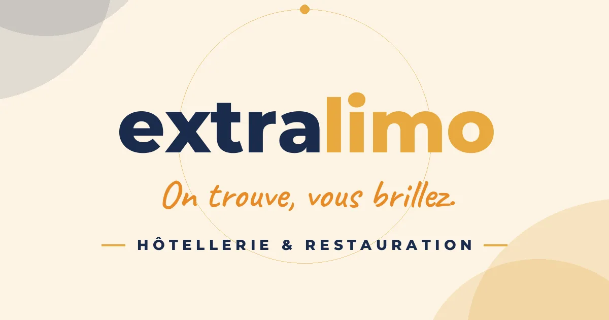
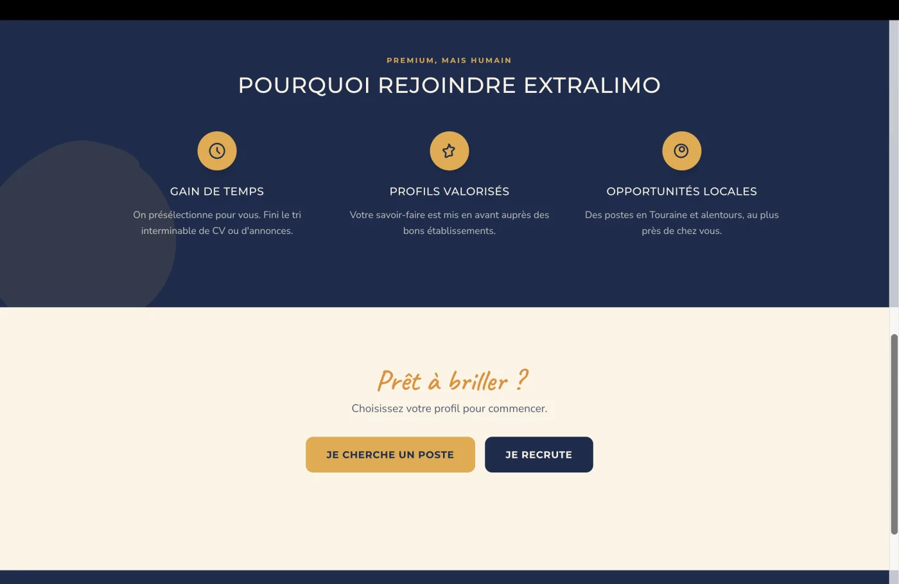
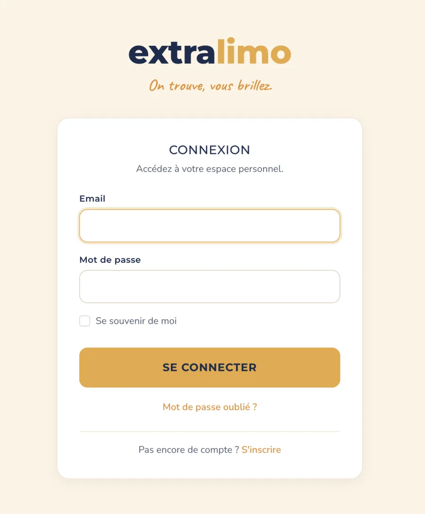

Web · 2026
EXTRALIMO
mise en relation HCR
L'hôtellerie-restauration peine à trouver les bons extras ; les candidats manquent de visibilité. EXTRALIMO les relie mais ce n'est pas un job board en libre-service : la valeur, c'est l'intermédiation humaine, une petite équipe d'admins qui sélectionne, propose et accompagne.

EXTRALIMOL'idée
On trouve, vous brillez.
01 Le pourquoi
L'hôtellerie-restauration peine à trouver les bons extras ; les candidats manquent de visibilité. EXTRALIMO les relie mais ce n'est pas un job board en libre-service : la valeur, c'est l'intermédiation humaine qui garantit un match pertinent.
“ Pas un job board de plus : un match validé par un humain. ”
02 La démarche
a.Trois rôles, un objet « match »
Candidat, entreprise et admin s'articulent autour d'une mise en relation.
b.Confidentialité by design
Les coordonnées restent masquées jusqu'au déblocage par un admin.
c.Intermédiation humaine
Matchs créés manuellement, selon le type de contrat et l'affinité de poste.
d.Mobile-first, RGPD
Inscriptions publiques pensées mobile, avec consentement RGPD.
03 Le résultat
En ligne sur extralimo.fr (52 commits, mise à jour juin 2026). Projet mené avec mes associés.
Galerie


